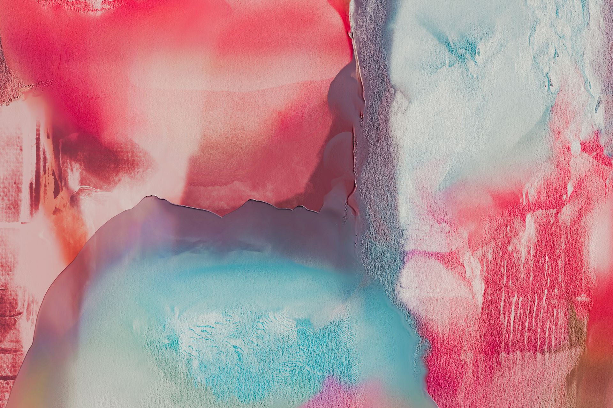

I want you to know that someone sees you — really sees you. Your hard work, your quiet strength, the grace you show on days that deserve none of it. You carry a light the world needs more than it knows, and being around you is watching a sunrise: steady, warm, and full of promise. Never doubt that you are meant for great things. Every mountain in front of you was placed there because you are strong enough to climb it.

For I know the plans I have for you, declares the Lord — plans to prosper you and not to harm you, plans to give you hope and a future.Jeremiah 29:11 · NIV